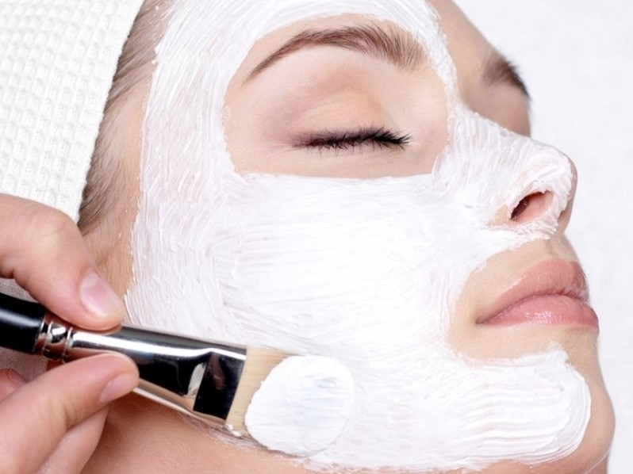

Skin care is the range of practices that support skin integrity, enhance its appearance and relieve skin conditions. They can include nutrition, avoidance of excessive sun exposure and appropriate use of emollients. Practices that enhance appearance include the use of cosmetics, botulinum, exfoliation, fillers, laser resurfacing, microdermabrasion, peels, retinol therapy and ultrasonic skin treatment. Skin care is a routine daily procedure in many settings, such as skin that is either too dry or too moist, and prevention of dermatitis and prevention of skin injuries.
A cosmetologist applying a face mask
Skin care is a part of the treatment of wound healing, radiation therapy and some medications.
Like the perfect Little Black Dress, blazer, black pumps, and sunglasses, having the basics means being able to put yourself together quickly and easily. In the end, making the effort to get the right basics means that you’ll look better with a lot less effort. The same goes for skin care. Which skin care basics do you need? Here they are! Skincare essentials for beginners